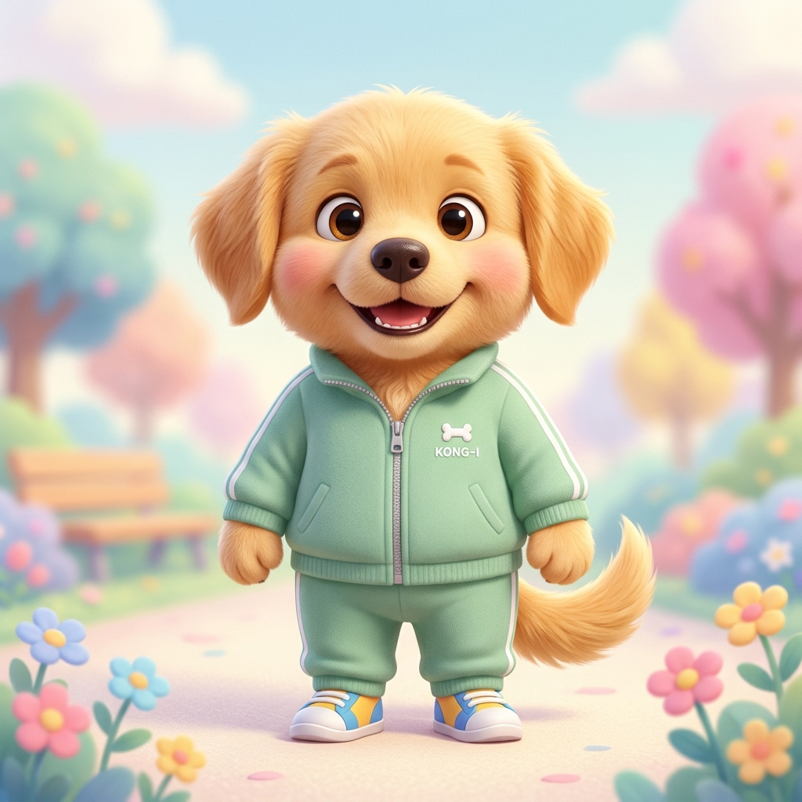
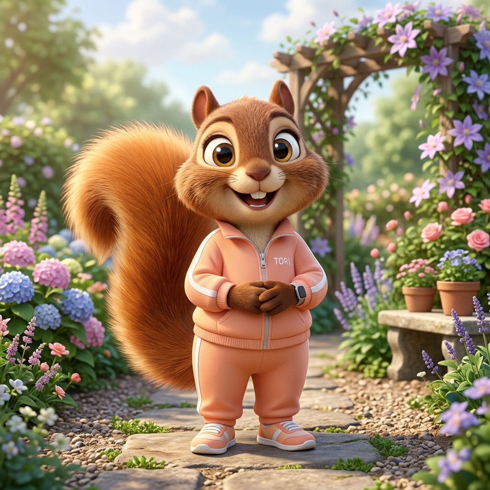
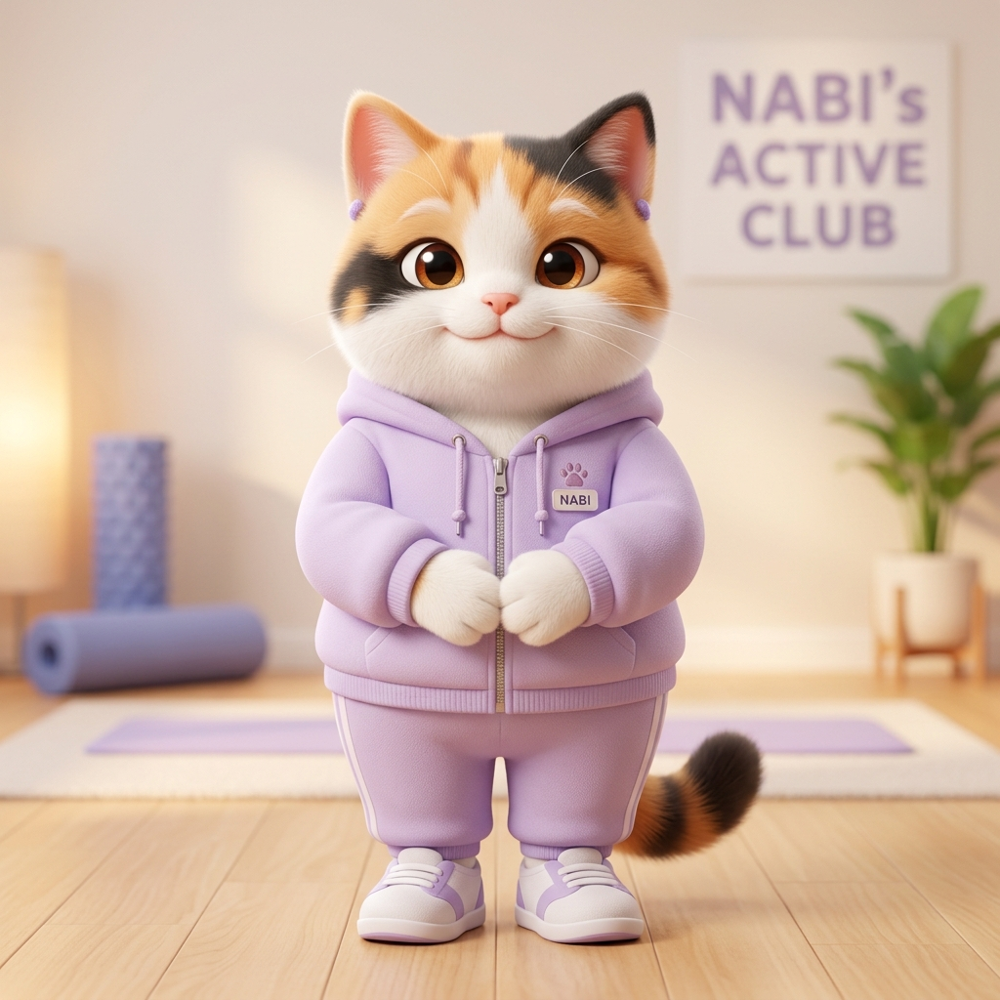
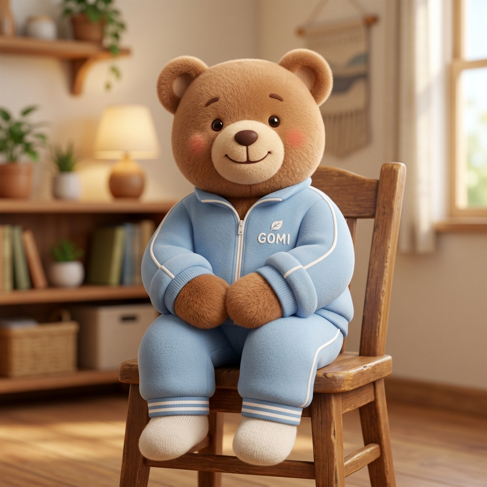

STEP 1
캐릭터와 기본 환경을 선택해 주세요
중앙의 메인 진행자 콩이와 함께 토리·나비·보리, 그리고 어르신 4명이 의자에 앉아 20분 동안 천천히 건강한 의자체조를 진행합니다.
1. 기억정원 20분 의자체조 참여진 (콩이 + 친구들 + 어르신 4명)
★

콩이 메인 진행 / 센터
화면 중앙 대형 배치 & 대표 음성 립싱크
✓

토리 활기 보조
활기차고 씩씩하게 의자체조 따라하기
✓

나비 유연 보조
차분하고 부드럽게 의자체조 따라하기
✓

곰이 안정 보조
안정감 있고 천천히 바른 자세 따라하기
2. 목표 영상 길이
대본 길이가 목표 시간보다 짧으면 AI가 어르신 안전 심호흡 및 반복 휴식 구간을 자동으로 추가합니다.
🛡️
어르신 의자체조 필수 8대 안전 수칙
🪑 의자 착석 상태 유지
🚫 점프 동작 금지
🚫 빠른 회전 금지
🚫 과도한 허리 비틀기 금지
🚫 빠른 목 돌리기 금지
🚫 한 발 서기 금지
🚫 무리한 다리 올리기 금지
🌿 천천히 반복 & 중간 휴식
3. 기억정원 배경 선택
주간보호센터 운동실
기억정원 산책로
따뜻한 거실
🌸
라일락 마을
🏫
밝은 교실
➕
직접 업로드
4. 캐릭터 음성 & 립싱크
스마트 립싱크(Lip-Sync) 엔진 연동
대사의 발음 모음(A, I, U, E, O)과 음성에 맞춰 캐릭터 입모양이 자연스럽고 생생하게 움직입니다.
5. 배경음악 (BGM)
기본 힐링 음원 적용 중
STEP 2
영상 대본을 입력해 주세요
복잡한 편집 지식 없이, 어르신들에게 들려드릴 말씀이나 체조 구령을 자유롭게 입력해 주세요.
📝 대본 입력창 (콩이 대표 음성)
총 0자
|
예상 소요 시간: 약 0초
|
예상 장면: 0개
STEP 3
AI 장면 자동 분리 및 동작 매칭
대본의 의미와 어르신 안전 수칙을 분석하여 최적의 체조 동작과 장면 순서를 완성했습니다. 카드를 드래그하여 순서를 바꿀 수 있습니다.
STEP 4
AI 영상 제작 파이프라인
전체 영상을 렌더링하기 전, 첫 장면(5~8초) 테스트 영상으로 캐릭터 모션과 립싱크를 사전 검증합니다.
첫 장면 테스트 — 기억정원 20분 의자체조 (콩이 메인 & 친구들·어르신 4명) 사전 검증
[20분 6대 코스] 중앙 콩이(대표 음성 & 6대 립싱크)와 토리·나비·보리 및 어르신 4명이 의자에 앉아 6대 코스(준비호흡, 목어깨, 양팔, 손뼉, 무릎발목, 마무리)를 진행합니다.
상태: 20분 의자체조 음성 및 첫 장면 영상 테스트 대기 중
전체 영상 렌더링 파이프라인
준비 중
0 / 0 장면 완료
0%
🌸 기억정원 AI 영상 렌더링 시스템 대기 중...
💡 [첫 장면 테스트]를 진행하시거나, 아래 [전체 영상 만들기] 버튼을 눌러주세요.
장면별 생성 상태 모니터링
STEP 5
완성 영상 미리보기 & 최종 내보내기
16:9 고화질 극장 모드에서 캐릭터 체조 동작, 음성, 립싱크, 자막, 배경음악을 감상하고 최종 영상 파일로 다운로드합니다.
🎬 최종 영상 만들기
캐릭터 영상, 음성 립싱크, 자막, 배경음악을 완전히 합성한 고화질 비디오를 생성합니다.
화면 비율
16:9 (와이드)
해상도
1920 × 1080 (FHD)
안전 모드
의자체조 수칙 100% 적용
오디오 믹싱
보이스 + BGM 자동 덕킹